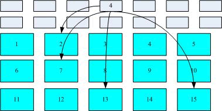
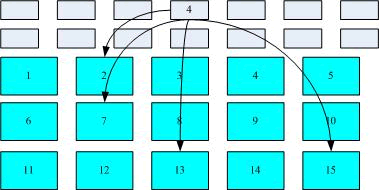

首页 > 编程笔记
Linux文件系统详解
硬盘是用来存储数据的，可以将其想象成柜子，只不过柜子是用来存储衣物的。新买来的硬盘，通常要对其进行分区并格式化，分区就如同把一个大柜按照要求分割成几个小柜子（组合衣柜)；格式化就好比在每个小柜子中打入隔断，决定每个隔断的大小和位置，然后在柜门上贴上标签，标签中写清楚每件衣服保存的隔断的位置和这件衣服的一些特性（比如衣服是谁的，衣服的颜色、大小等）。
很多初学者认为，对硬盘进行格式化，只是清除了硬盘中的数据，其实不然，格式化过程中还向硬盘中写入了文件系统。因为不同的操作系统，管理系统中文件的方式也不尽相同（给文件设定的属性和权限也不完全一样），因此，为了使硬盘有效存放当前系统中的文件数据，就需要将硬盘进行格式化，令其使用和操作系统一样（或接近）的文件系统格式。
早期的 Linux 使用 Ext2 文件系统格式，CentOS 5.x 默认使用 Ext3，本教程中所用的 CentOS 6.x 默认使用 Ext4，而目前最新的 CentOS 7.x 默认使用 xfs 格式。
不同的文件系统，其运作模式和操作系统的文件数据有关。拿 Linux 操作系统中的文件为例，文件数据不仅包括文件中的内容，还包含非常多的文件属性，例如文件的 rwx 权限以及文件所有者、所属组、创建时间等。
通常情况下，文件系统会将文件的实际内容和属性分开存放：
由此我们可以推断出，只要能找到文件 inode 所在的位置，自然就能知道这个文件存放数据的 block 号，从而找到文件的实际数据。整个过程如图 1 所示。

图 1 文件系统的数据存取示意图
图 1 中，文件系统先格式化出 inode 和 block 块，假设某文件的权限和属性信息存放到 inode 4 号位置，这个 inode 记录了实际存储文件数据的 block 号有 4 个，分别为 2、7、13、15，由此，操作系统就能快速地找到文件数据的存储位置。
这种管理文件的系统称为索引式文件系统，Linux 文件系统（Ext 系列）就属于索引式文件系统。
本小节的内容基于底层，不是很好理解。如果大家实在看不明白，也没有关系，这一小节的内容并不影响对 Linux 的操作和使用，也不影响我们后面的学习。
很多初学者认为，对硬盘进行格式化，只是清除了硬盘中的数据，其实不然，格式化过程中还向硬盘中写入了文件系统。因为不同的操作系统，管理系统中文件的方式也不尽相同（给文件设定的属性和权限也不完全一样），因此，为了使硬盘有效存放当前系统中的文件数据，就需要将硬盘进行格式化，令其使用和操作系统一样（或接近）的文件系统格式。
各操作系统使用的文件系统并不相同，例如，Windows 98 以前的微软操作系统使用 FAT（FAT16）文件系统，Windows 2000 以后的版本使用 NTFS 文件系统，而 Linux 的正统文件系统是 Ext2。
既然格式化的真实目的是为了写入文件系统，那么，Linux 中的文件系统到底是什么，又是如何运作的呢？早期的 Linux 使用 Ext2 文件系统格式，CentOS 5.x 默认使用 Ext3，本教程中所用的 CentOS 6.x 默认使用 Ext4，而目前最新的 CentOS 7.x 默认使用 xfs 格式。
Ext4 是 Ext3（Ext2） 文件系统的升级版，在性能、伸缩性和可靠性方面进行了大量改进，变化可以说是翻天覆地的，比如：由于 xfs 文件系统不是这里的重点，因为有关 xfs 文件系统，这里不做深入介绍，感兴趣的读者可自行搜索相关资料。
- 向下兼容 Ext3；
- 最大 1EB 文件系统和 16TB 文件；
- 无限数量子目录；
- Extents 连续数据块概念；
- 多块分配、延迟分配、持久预分配；
- 快速 FSCK、日志校验、无日志模式、在线碎片整理、inode 增强、默认启用 barrier 等；
不同的文件系统，其运作模式和操作系统的文件数据有关。拿 Linux 操作系统中的文件为例，文件数据不仅包括文件中的内容，还包含非常多的文件属性，例如文件的 rwx 权限以及文件所有者、所属组、创建时间等。
通常情况下，文件系统会将文件的实际内容和属性分开存放：
- 文件的属性保存在 inode 中（i 节点）中，每个 inode 都有自己的编号。每个文件各占用一个 inode。不仅如此，inode 中还记录着文件数据所在 block 块的编号；
- 文件的实际内容保存在 block 中（数据块），类似衣柜的隔断，用来真正保存衣物。每个 block 都有属于自己的编号。当文件太大时，可能会占用多个 block 块。
- 另外，还有一个 super block（超级块）用于记录整个文件系统的整体信息，包括 inode 和 block 的总量、已经使用量和剩余量，以及文件系统的格式和相关信息等。
由此我们可以推断出，只要能找到文件 inode 所在的位置，自然就能知道这个文件存放数据的 block 号，从而找到文件的实际数据。整个过程如图 1 所示。

图 1 文件系统的数据存取示意图
图 1 中，文件系统先格式化出 inode 和 block 块，假设某文件的权限和属性信息存放到 inode 4 号位置，这个 inode 记录了实际存储文件数据的 block 号有 4 个，分别为 2、7、13、15，由此，操作系统就能快速地找到文件数据的存储位置。
这种管理文件的系统称为索引式文件系统，Linux 文件系统（Ext 系列）就属于索引式文件系统。
注意，inode 节点并不存储文件的文件名，因为文件名是文件所在目录的数据，所以会保存在上一级目录的 block 块中。前面章节在讲权限命令的时候说过，要对文件的上一级目录拥有 w 权限，才能删除目录中的文件，就是因为文件名是保存在目录的 block 中的。
Linux支持的常见文件系统
Linux 系统能够支持的文件系统非常多，除 Linux 默认文件系统 Ext2、Ext3 和 Ext4 之外，还能支持 fat16、fat32、NTFS（需要重新编译内核）等 Windows 文件系统。也就是说，Linux 可以通过挂载的方式使用 Windows 文件系统中的数据。Linux 所能够支持的文件系统在 "/usr/src/kemels/当前系统版本/fs" 目录中（需要在安装时选择），该目录中的每个子目录都是一个可以识别的文件系统。我们介绍较为常见的 Linux 支持的文件系统，如表 1 所示。| 文件系统 | 描 述 |
|---|---|
| Ext | Linux 中最早的文件系统，由于在性能和兼容性上具有很多缺陷，现在已经很少使用 |
| Ext2 | 是 Ext 文件系统的升级版本，Red Hat Linux 7.2 版本以前的系统默认都是 Ext2 文件系统。于 1993 年发布，支持最大 16TB 的分区和最大 2TB 的文件（1TB=1024GB=1024x1024KB) |
| Ext3 | 是 Ext2 文件系统的升级版本，最大的区别就是带日志功能，以便在系统突然停止时提高文件系统的可靠性。支持最大 16TB 的分区和最大 2TB 的文件 |
| Ext4 | 是 Ext3 文件系统的升级版。Ext4 在性能、伸缩性和可靠性方面进行了大量改进。Ext4 的变化可以说是翻天覆地的，比如向下兼容 Ext3、最大 1EB 文件系统和 16TB 文件、无限数量子目录、Extents 连续数据块 概念、多块分配、延迟分配、持久预分配、快速 FSCK、日志校验、无日志模式、在线碎片整理、inode 增强、默认启用 barrier 等。它是 CentOS 6.3 的默认文件系统 |
| xfs | 被业界称为最先进、最具有可升级性的文件系统技术，由 SGI 公司设计，目前最新的 CentOS 7 版本默认使用的就是此文件系统。 |
| swap | swap 是 Linux 中用于交换分区的文件系统（类似于 Windows 中的虚拟内存)，当内存不够用时，使用交换分区暂时替代内存。一般大小为内存的 2 倍，但是不要超过 2GB。它是 Linux 的必需分区 |
| NFS | NFS 是网络文件系统（Network File System）的缩写，是用来实现不同主机之间文件共享的一种网络服务，本地主机可以通过挂载的方式使用远程共享的资源 |
| iso9660 | 光盘的标准文件系统。Linux 要想使用光盘，必须支持 iso9660 文件系统 |
| fat | 就是 Windows 下的 fatl6 文件系统，在 Linux 中识别为 fat |
| vfat | 就是 Windows 下的 fat32 文件系统，在 Linux 中识别为 vfat。支持最大 32GB 的分区和最大 4GB 的文件 |
| NTFS | 就是 Windows 下的 NTFS 文件系统，不过 Linux 默认是不能识别 NTFS 文件系统的，如果需要识别，则需要重新编译内核才能支持。它比 fat32 文件系统更加安全，速度更快，支持最大 2TB 的分区和最大 64GB 的文件 |
| ufs | Sun 公司的操作系统 Solaris 和 SunOS 所采用的文件系统 |
| proc | Linux 中基于内存的虚拟文件系统，用来管理内存存储目录 /proc |
| sysfs | 和 proc —样，也是基于内存的虚拟文件系统，用来管理内存存储目录 /sysfs |
| tmpfs | 也是一种基于内存的虚拟文件系统，不过也可以使用 swap 交换分区 |
关注公众号「站长严长生」，在手机上阅读所有教程，随时随地都能学习。内含一款搜索神器，免费下载全网书籍和视频。

微信扫码关注公众号